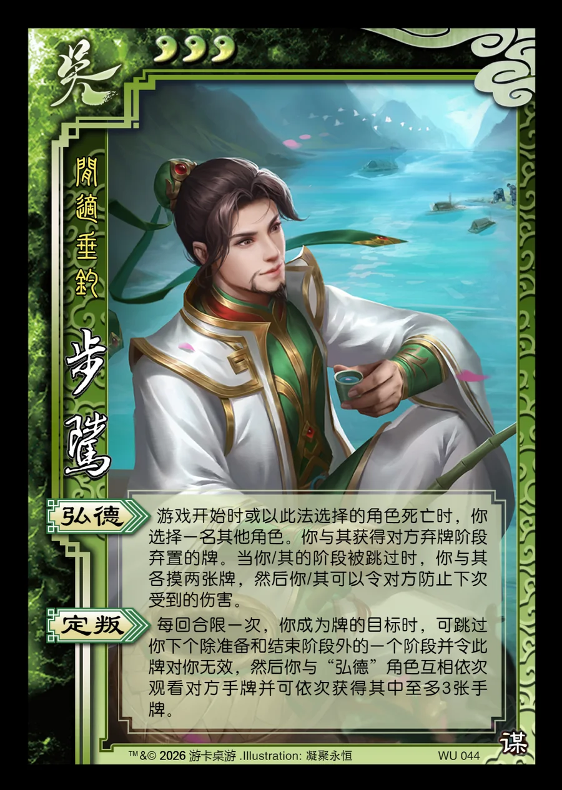

点击卡面查看大图
吴
谋步骘
♥3闲适垂钓
弘德
游戏开始时或以此法选择的角色死亡时，你选择一名其他角色。你与其获得对方弃牌阶段弃置的牌。当你/其的阶段被跳过时，你与其各摸两张牌，然后你/其可以令对方防止下次受到的伤害。
定叛
每回合限一次，你成为牌的目标时，可跳过你下个除准备和结束阶段外的一个阶段并令此牌对你无效，然后你与“弘德”角色互相依次观看对方手牌并可依次获得其中至多3张手牌。

点击卡面查看大图
闲适垂钓
游戏开始时或以此法选择的角色死亡时，你选择一名其他角色。你与其获得对方弃牌阶段弃置的牌。当你/其的阶段被跳过时，你与其各摸两张牌，然后你/其可以令对方防止下次受到的伤害。
每回合限一次，你成为牌的目标时，可跳过你下个除准备和结束阶段外的一个阶段并令此牌对你无效，然后你与“弘德”角色互相依次观看对方手牌并可依次获得其中至多3张手牌。